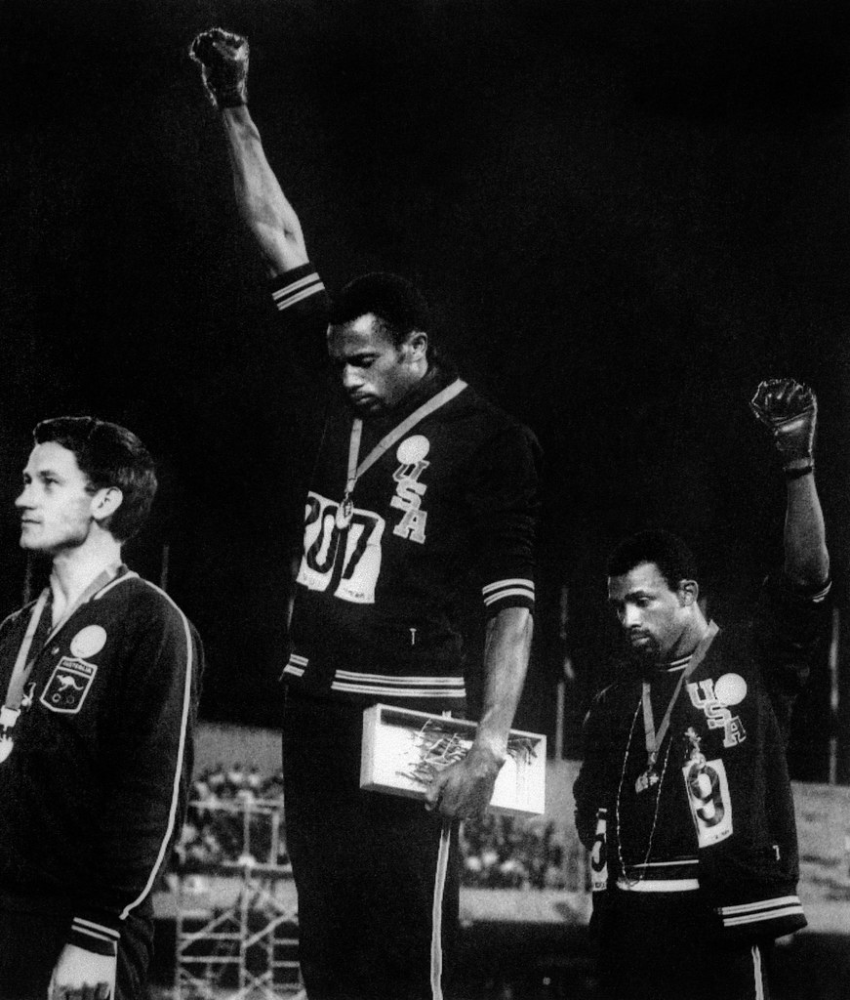

Opinions differ when it comes to the National Anthem
BY JENNIFER MANDATO AND MADISON PEEK
A heavy rainstorm washed out the Frederick Keys’ home-opener last Wednesday night at Nymeo Field at Harry Grove Stadium. But one ritual went off as planned – the singing of the national anthem..
Nyemo Field @ Harry Grove Stadium (Wikipedia Commons)
“Keys’ broadcaster JJ Michalski performed the anthem moments before rain pelted the announced crowd of 3,500. Amy Lester sought shelter from the storm next to a concession stand, but enjoyed the moment nevertheless. “I thought it was fantastic,” said Lester, who lives in Rockville. “I’m an all-American girl.”
Lester associates “The Star-Spangled Banner” with her childhood. Her father, Roy Lester, coached the University of Maryland Terrapins football team from 1969 to 1971. She remembers hearing the national anthem at Terps games. For her, the national anthem is patriotic and uplifting.
Michalski echoed that.
“Obviously, it’s the national anthem. You always think of everything that America’s gone through to reach the point of freedom we have in 2021,” he said.
A majority of sports fans share those positive feelings.
The Shirley Povich Center for Sports Journalism in the Philip Merrill College of Journalism at the University of Maryland, in collaboration with the university’s Center for Democracy and Civic Engagement and The Washington Post, conducted a national poll of 1,500 U.S. adults. The online poll released recently found that 84 percent of Americans support the national anthem being played or sung before professional sporting events in the United States.
According to the poll, four-fifths of White Americans and two-thirds of both Hispanics and Asian Americans reported positive feelings. However, 35 percent of Black Americans shared those perceptions, with 22 percent of Black Americans reporting negative feelings when they heard the anthem. In the poll, 23 percent of Black adults said that the anthem is hurtful or not representative of them.
In addition to patriotism, poll respondents said they associated the anthem at sports events with pride, respect or honor for the country or military, and unity. Others said the anthem when played at a stadium or arena is “just a song,” a “formality” and “doesn’t really have any relevance to me.”
Nathan Rollins, who attended the Keys game, said he is a baseball fan and that the anthem is part of the experience of going to Harry Grove Stadium. Often, he joins a group of friends who come to the ballpark from Collective Church in Frederick. He said the most important thing to him is the community that he is a part of at the game.
“I love baseball, it’s nostalgic,” Rollins said.
Frederick is a fitting place to look at the legacy of the national anthem. Across the street from Harry Grove Stadium is the cemetery in which Francis Scott Key, who penned the national anthem, is buried.
Key wrote the anthem during the War of 1812. About a hundred years later, it began to be played at sporting events.
According to some accounts, the anthem gained popularity when it was played at the 1918 World Series during Babe Ruth’s final postseason appearance for the Boston Red Sox.
That World Series was played against the backdrop of World War I. The toll of the war could be felt in the nation’s economy, workforce, and even baseball. In the series, Ruth, then a pitcher, turned in a 1-0 shutout over the Chicago Cubs. During the seventh-inning stretch, a military band played “The Star-Spangled Banner.” Players on the field placed their hands over their hearts. The crowd joined in.
In the years since, the anthem has been a source of national pride and at times a lightning rod for protest. Athletes have used the anthem to protest racism in America.
In 1968, U.S. Olympic medalists Tommie Smith and John Carlos raised their fists during the anthem to advocate for human rights, during heightened racial tensions and the civil rights movement. In 1996, Denver Nuggets guard Mahmoud Abdul-Rauf refused to stand for the anthem during an NBA game to protest anti-Islamic rhetoric.
Tommie Smith and John Carlos at the 1968 Olympics (Flickr)
San Francisco 49ers quarterback Colin Kaepernick knelt during a 2016 preseason game’s national anthem to protest police brutality. His actions sparked national conversation.
Jim Jones of Woodlawn served in the military. Speaking at the Keys game, he said that Kaepernick’s protest didn’t necessarily bother him, but it raised issues of respect on a national level.
“The national anthem shows that people have the freedom to protest,” Jones said.